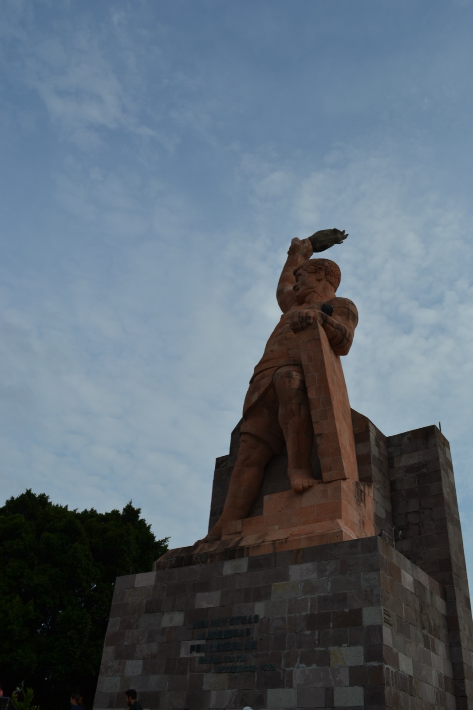
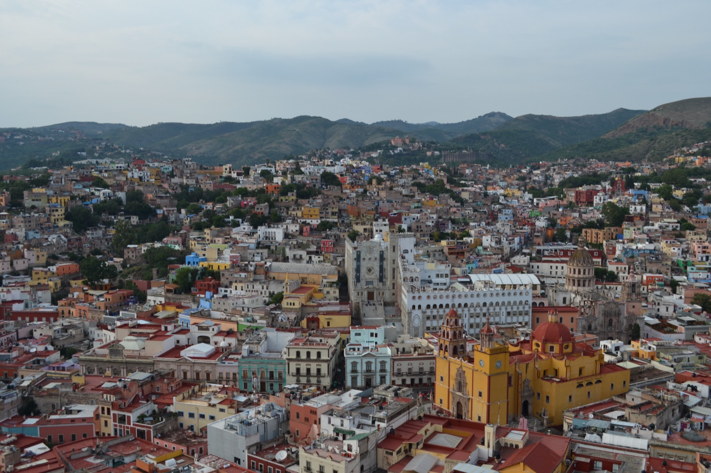
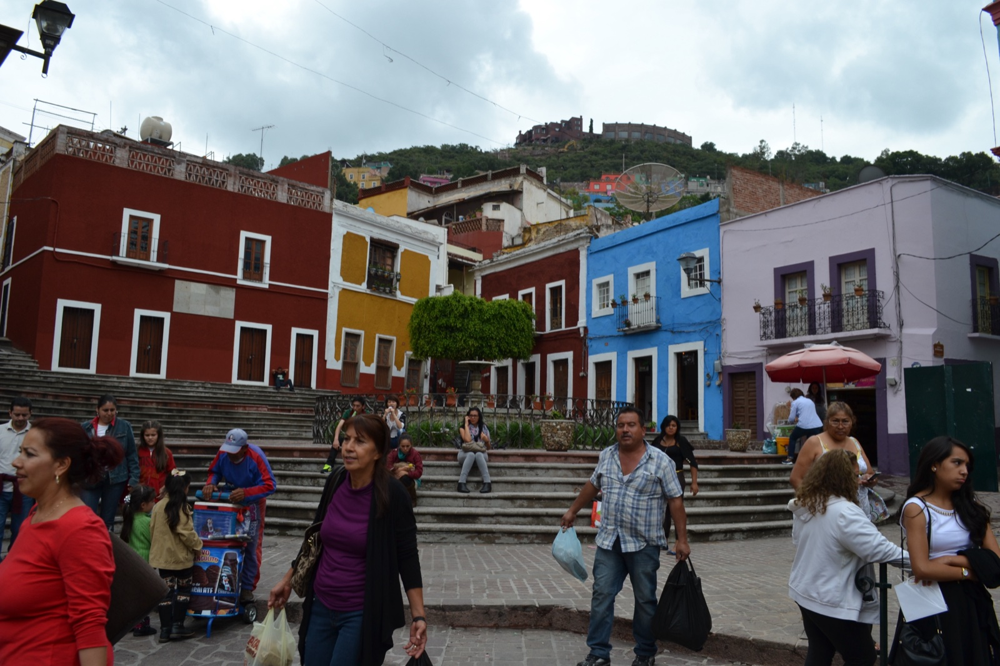
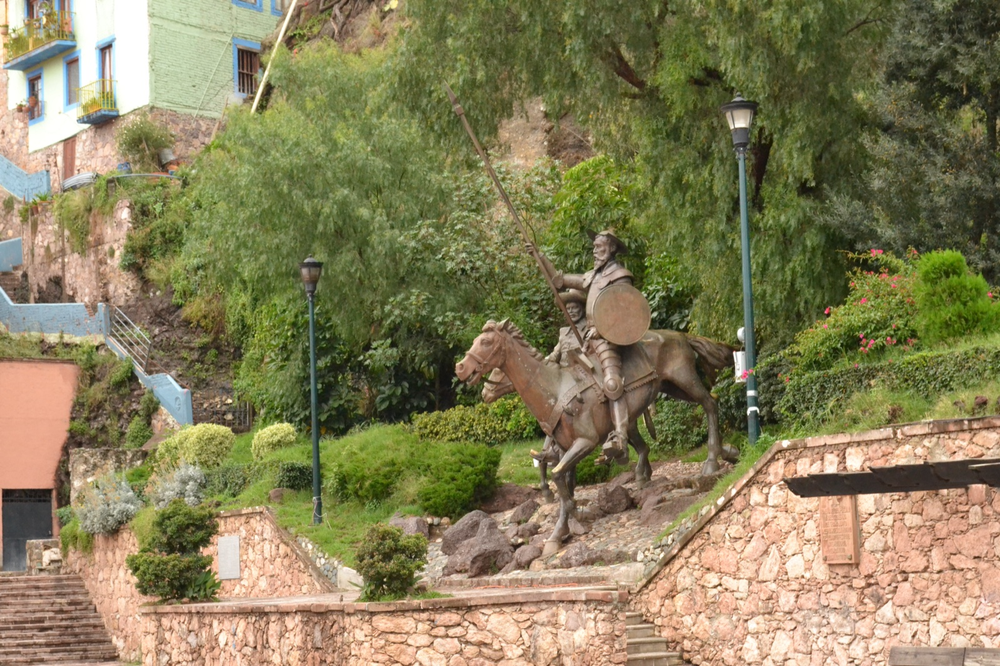
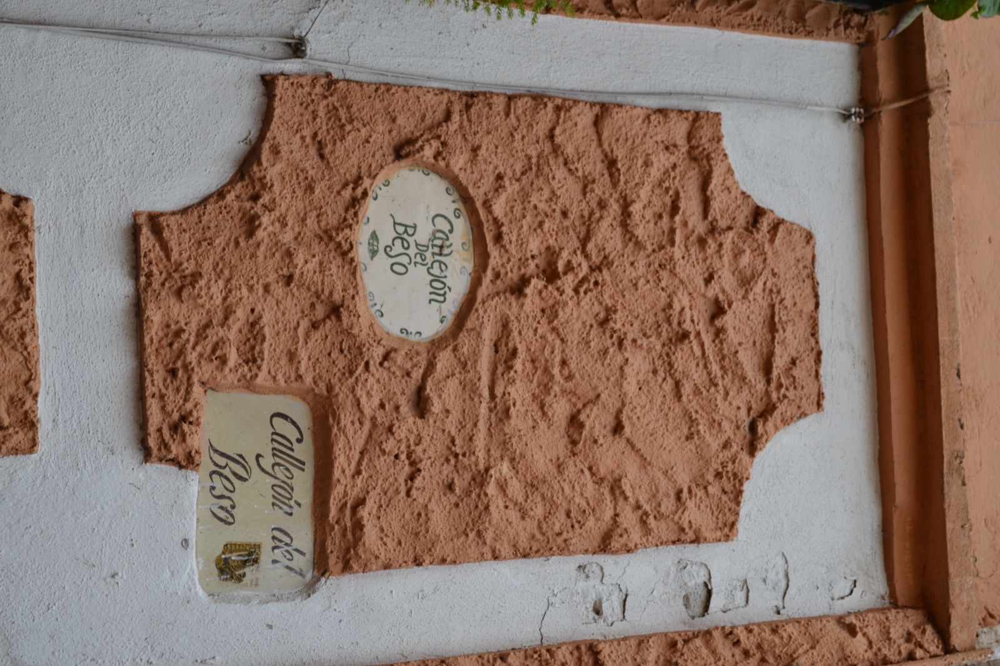
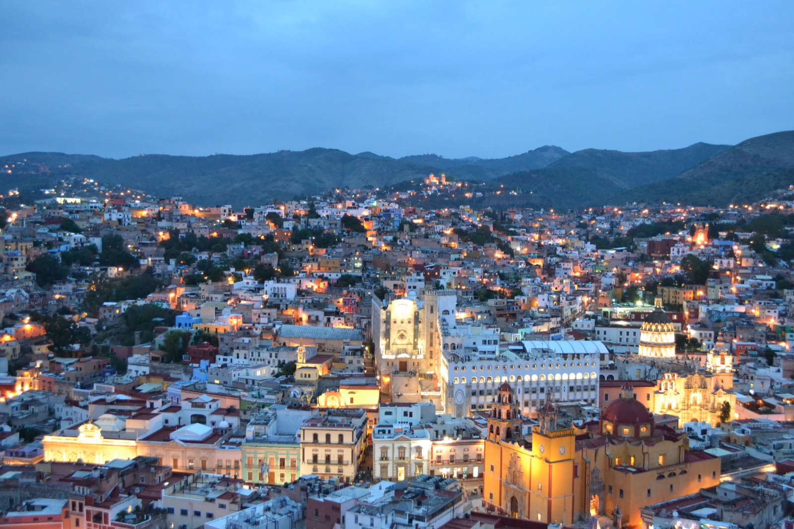

メキシコシティから北西へバスで約4時間半。標高2,000mの山あいに、信じられないほどカラフルな街がある。グアナファト（Guanajuato）——16世紀に銀鉱山で栄え、今は街全体がユネスコ世界遺産に登録された、メキシコ屈指の観光地だ。
「宝石箱のような街」と、どこかで読んだことがある。実際に山肌に積み上がる色とりどりの家々を眺めてみると、その表現がまったく大げさでないことがわかる。
ピピラ像と高台からの眺め
グアナファトに着いたらまず行くべきと言われるのが、街を見下ろす丘の上に立つピピラ像（Monumento al Pípila）だ。ピピラはスペイン独立戦争の英雄ホセ・マリア・ピピラの愛称。たった一人で敵の拠点・アロンディガに火を放ち、独立への扉を開いた人物として街のシンボルになっている。

ピピラ像の足元、高台のテラスから街を見下ろした瞬間、息を呑む。山の斜面にぎっしり積み重なるピンク、黄色、青、赤、緑の家々。中央に堂々と建つ黄色のバシリカ、白い大学の建物。これが「宝石箱」の正体だった。

黄色のバシリカとカラフルな広場
街の中心には、街のどこからでも目印になるバシリカ・デ・ヌエストラ・セニョーラ・デ・グアナファトが建つ。鮮やかな黄色の壁とピンクの装飾、コロニアル建築の代表格だ。


ドンキホーテの街——お店の主人とのやりとり
グアナファトはセルバンテス文化の街でもある。毎年10月にはセルバンティーノ国際芸術祭（Festival Internacional Cervantino）が開かれ、街にはドンキホーテにちなんだ博物館や像が点在する。

街歩きの途中、ドンキホーテの置物を売る小さな店に立ち寄った。店主が「どこから来たんだい？」と話しかけてきて、「これからピピラの丘に登って街を見下ろす予定」と答えると、「じゃあ帰りに寄っていけ。お土産をあげるよ」と笑顔で言ってくれた。
結局、寄らずに帰った。会話の感じは間違いなく良い人で、もう一度顔を出すべきだったかもしれない。それでも、見知らぬ街で「無料で何かを受け取る」ことには警戒もある。旅先での好意は、ありがたく受け取る場合と距離を置く場合の判断が難しい。あの店主には、心の中でだけお礼を言った。
接吻の小道——悲恋の伝説
旧市街の細い路地を歩いていると、Callejón del Beso（接吻の小道）と書かれた標識が現れる。幅たった68cm、両側の家のバルコニーが向かい合って手を伸ばせば触れ合える、伝説の小道だ。

伝説はこうだ——18世紀、向かい合う家に住む裕福な商人の娘ドニャ・カルメンと、貧しい青年ドン・ルイス。父親は二人の交際を許さず、二人はバルコニー越しにキスをすることでしか愛を交わせなかった。ある日、父親に見つかったカルメンは父の手にかかって命を落とし、ルイスはその冷たい手にキスをして去った。今もこの小道で恋人同士が3段目に立って口づけを交わすと、7年（一説には15年）の幸せが約束されるという。

ミイラ博物館——なぜ作られたのか
グアナファトのもうひとつの名所が、街外れにあるミイラ博物館（Museo de las Momias de Guanajuato）だ。展示室には、自然にミイラ化した遺体が約100体、ガラス越しに並ぶ。さすがに撮影はせず、ただ見て回った。
「なぜミイラを作っているの？」——博物館を出てから街の人に聞いてみた。返ってきたのは「永代埋葬の権利を買えなかった人たちが、後から掘り起こされた」という答え。半信半疑だったが、後で調べてみると、おおむね当たっていた。
1865年から1958年まで、グアナファトでは埋葬税（一定期間ごとに支払う墓の維持費）を遺族が払えなくなると、遺体が掘り起こされる制度があった。掘り出された遺体は、グアナファトの低湿度・ミネラル豊富な土壌のおかげで、腐敗せず自然にミイラ化していた。やがてそのミイラが観光資源として展示されるようになり、現在の博物館の起源になった。
「貧しいから墓に残れず、ミイラとして展示される」——この事実をどう受け止めるかは難しい。でも、メキシコ人の死生観——死を生のすぐ隣に置く感覚——を考えると、これもまた、彼ららしい弔い方なのかもしれない。
日本人観光客が多い街
グアナファトを歩いていて意外だったのは、日本人観光客に何度もすれ違ったことだ。メキシコシティでもユカタン半島でも、日本人にはほとんど会わなかったのに、グアナファトだけ妙に多かった。
日本のメディアで「世界一美しい街」「宝石箱のような街」として紹介されることが多いせいだろう。中南米の観光地の中では、群を抜いて日本人にとって認知度が高い場所のひとつだと思う。
夜のグアナファト
街のクライマックスは夜だ。日没とともにバシリカと大学がライトアップされ、家々の窓から漏れる小さな明かりが山の斜面いっぱいに広がる。

「宝石箱」という比喩が、夜になって本当の意味を持つ。昼間のカラフルな家並みがぐっと暗く沈み、代わりに無数の小さな光が現れる——本当に、誰かが箱の蓋を開けて宝石をぶちまけたように見えるのだ。
たった1日歩いただけで、グアナファトには戻ってきたい場所があまりにも多すぎた。あの店主にお土産をもらいに行く約束を、いつか果たさないといけないかもしれない。